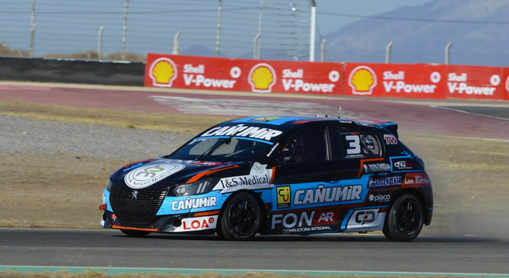

Renzo Blotta sumó fuerte en San Juan y se metió entre los diez del campeonato

Renzo Blotta completó la cuarta fecha del Turismo Nacional Clase 2 en el Circuito San Juan Villicum, donde volvió a ser protagonista y cerró un fin de semana positivo con un quinto puesto en la final y puntos importantes para el campeonato.
La actividad en San Juan dejó un gran espectáculo para el Turismo Nacional, tanto en la Clase 2 como en la Clase 3, con carreras intensas, disputadas y con varios protagonistas peleando adelante durante todo el fin de semana.
En la clasificación de la Clase 2, Blotta logró ubicarse en el 7° puesto, quedando bien posicionado de cara a las series y dentro de un grupo muy competitivo.
Luego, en la primera serie, el piloto comodorense volvió a mostrarse firme y finalizó en la segunda colocación, escoltando a Tomás Vitar. El tercer lugar quedó en manos de Pedro Grippo.
La segunda serie tuvo como ganador a Exequiel Bastidas, seguido por Andrés Calderón y Federico Luques. En tanto, la tercera batería quedó para Francisco Coltrinari, escoltado por Juan Martín Eluchans y Juan Ignacio Canela.
Ya en la final del domingo, la victoria quedó en manos de Exequiel Bastidas, seguido por Francisco Coltrinari y Juan Martín Eluchans, en una carrera atractiva y muy disputada de principio a fin.
Blotta, por su parte, completó una final inteligente y cruzó la bandera a cuadros en el 5° puesto, sumando unidades valiosas en función del campeonato.
Más allá del resultado final, Blotta llevó adelante un fin de semana muy inteligente. Supo cuándo atacar y cuándo sostener, manteniéndose siempre en carrera y aprovechando cada oportunidad para sumar fuerte en función del campeonato.
Con los puntos obtenidos en San Juan, el piloto chubutense quedó ubicado en el 8° puesto del campeonato. La tabla tiene como líder a Francisco Coltrinari con 131 unidades, seguido por Tomás Vitar con 127 y Exequiel Bastidas con 110.
Por su parte, la Clase 3 también ofreció un gran espectáculo en Villicum, con victoria para Facundo Chapur, escoltado por Julián Santero y Jorge Barrio, redondeando un fin de semana de alto nivel para el Turismo Nacional.
Para Blotta, el paso por San Juan deja un balance positivo: protagonismo, puntos importantes y una buena cosecha para seguir prendido entre los diez mejores del campeonato.